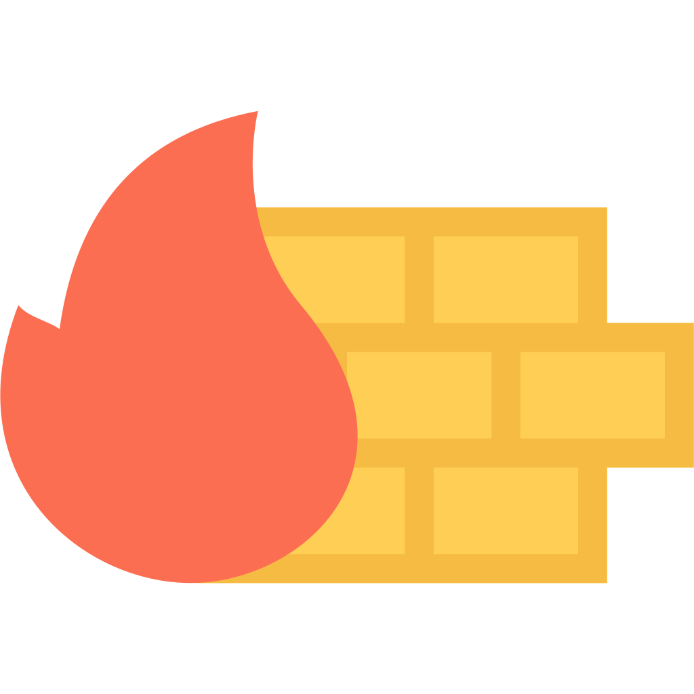

-
Tout au long de mon année de BUT, j’ai appris à configurer différents équipements réseau. Nous avons réalisé de nombreux projets et travaux pratiques pour simuler le réseau d’une petite entreprise. Pour répondre à ces besoins, j’ai dû :
Concevoir le réseau :- Définir les sous-réseaux
- Attribuer les adresses IP appropriées
- Switchs Cisco : paramétrage des VLANs et STP
- Routeurs Cisco : routage inter-VLAN, NAT, DHCP et DNS
- Appliquer des ACLs
Résultat : Le projet SAE21 témoigne de cette maîtrise (télécharger le fichier : SAE21).
-
Découverte
Depuis le début de l’année, j’utilise le logiciel Cisco Packet Tracer pour m’entraîner sur mes travaux pratiques et mes projets réseau, afin de simuler des architectures, tester des configurations et comprendre le comportement des équipements avant déploiement.
Mise en pratique
J’ai conçu, configuré et validé plusieurs topologies réseau (VLAN, routage inter-VLAN, OSPF, ACL…) en utilisant Packet Tracer, en suivant méthodiquement les exercices de TP et en adaptant les scénarios à mes besoins métier pour renforcer ma compréhension des protocoles et des bonnes pratiques.
Résultat
Grâce à cette maîtrise, j’ai pu mener à bien le projet SAE21, où j’ai modélisé et testé l’ensemble de l’infrastructure réseau avant mise en production, garantissant la fiabilité et la performance de la solution.
-
Découverte
Si un réseau ne dispose pas d'une sécurité assez forte, il ne sert à RIEN. C'est pourquoi il est important d'avoir de fortes notions de cybersécurité quand nous sommes des administrateurs ou architectes réseaux.
Mise en pratique
Configuration d'ASA, le parfeu cisco et implémentation d'ACL.
Prévention des dangers de la diffusion de la vie privée sur internet (SAE13)
J'ai dû concevoir de nombreux sites et systèmes tout au long de ma vie, ce qui m'a permis d'acquérir de solides compétences en :
-
 PHP + SQLite
PHP + SQLite
-
 C#
C#
-
 HTML5/CSS3
HTML5/CSS3
-
 JavaScript
JavaScript
-
 Python
Python
Découverte
Je me suis toujours demandé comment fonctionnait les téléphonnes. Comment passe-t-on d'un signal analogique à un signal éléctrique ? Les cours de cette année m'ont beaucoup apporté à ce sujet.
Mise en pratique
J'ai configuré plusiseurs serveurs de téléphonies, notamment des serveurs SIP, lors des TPs de téléphonie de cette année.
J'ai réalisé un serveur privé de téléphonie (PABx) afin de simuler un cas de figure d'entreprise.Découverte
Lors de ma L1, j'ai dû réaliser de nombreux projets. Le projet en SAE 24 était prévu pour 5 étudiants, malheureusement à cause d'un abandon, mon équipe ne disposait que de 4 étudiants. Nous avons donc dû avoir un bon travail d'équipe pour mener à bien le projet.
Mise en pratique
Nous avons donc dû être organisés dans nos tâches et établir un chef de groupe. J'ai créé un GANTT et un RACI afin de pouvoir travailler dans les temps en rattrapant les retards. Le résultat se trouve dans la section projet.